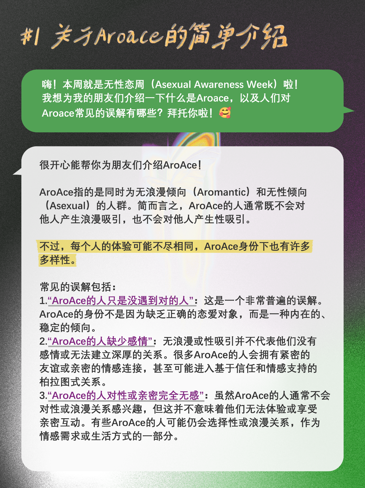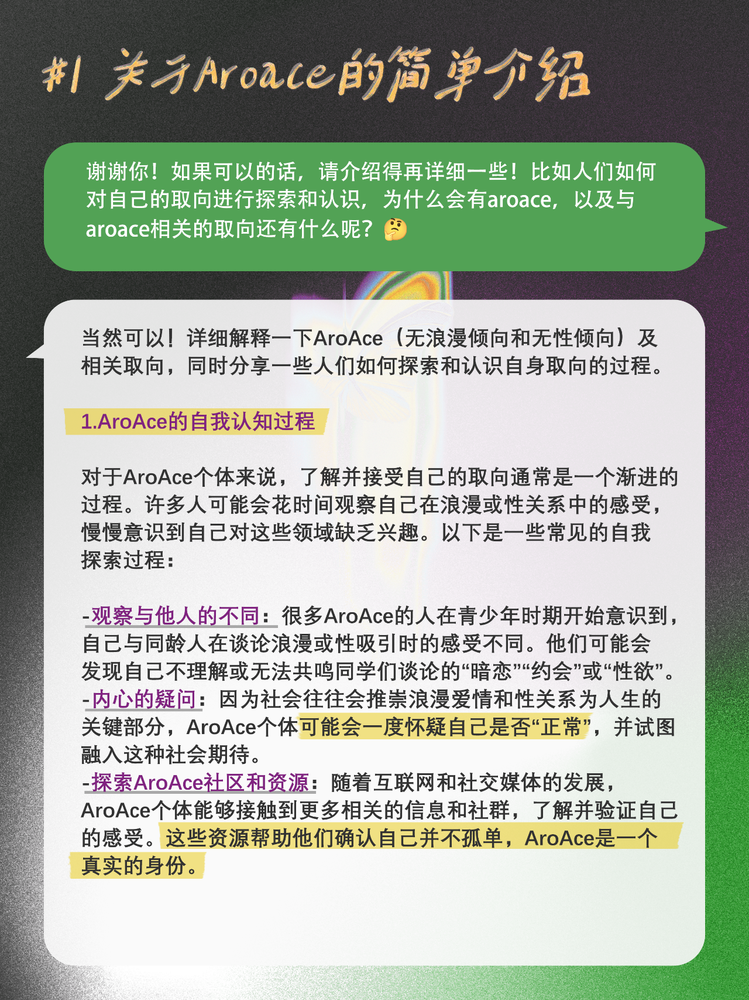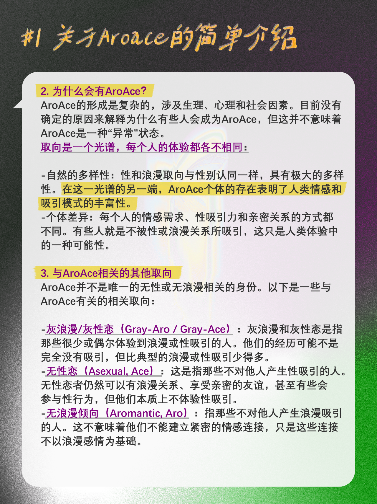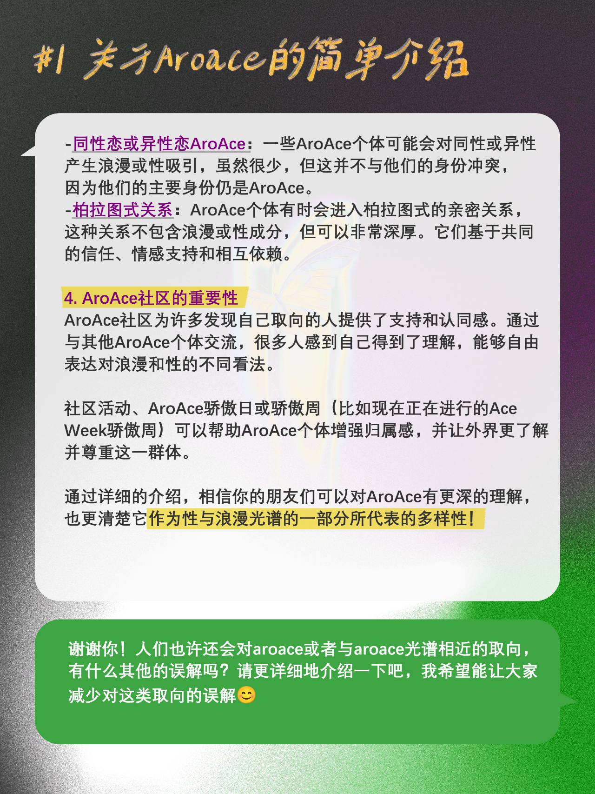
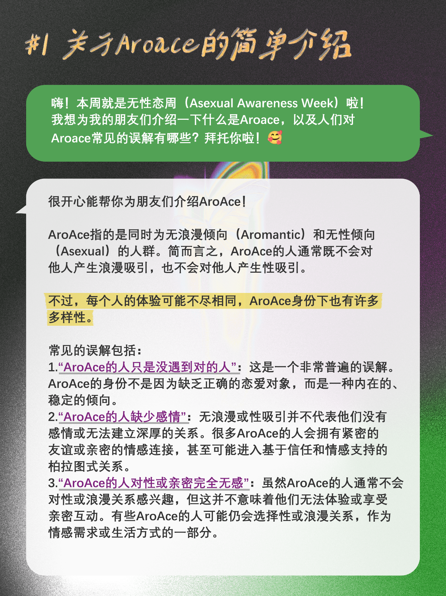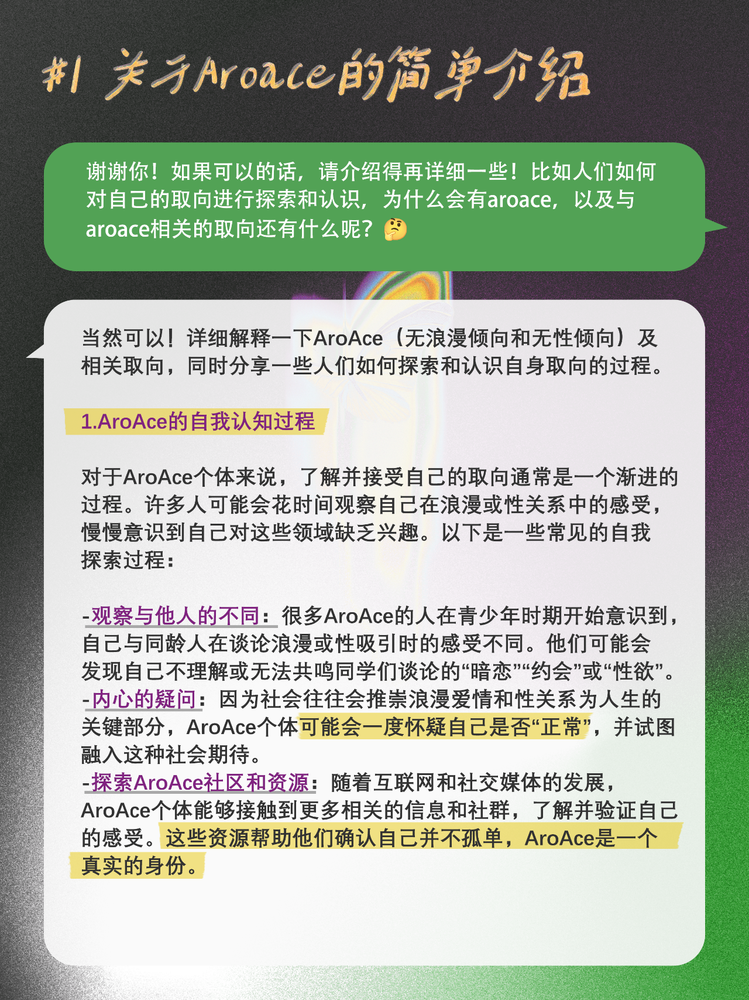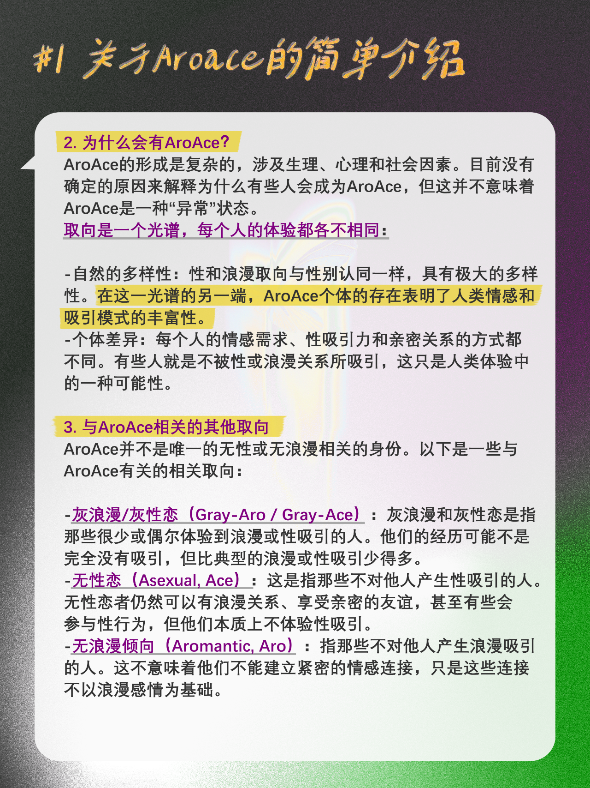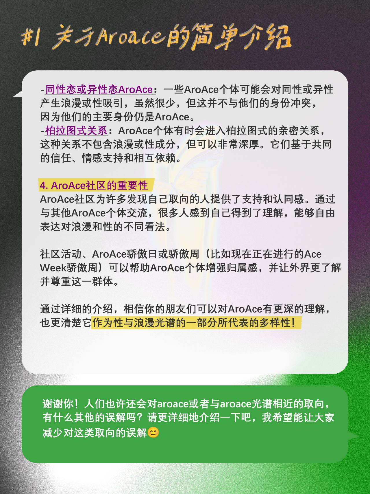 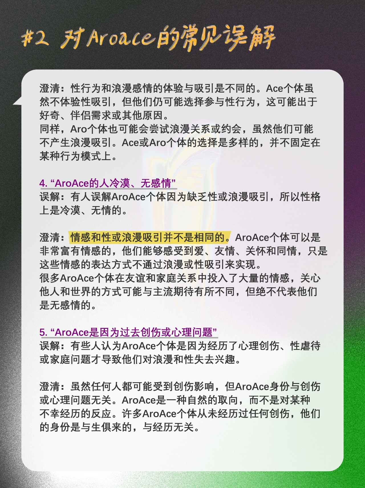
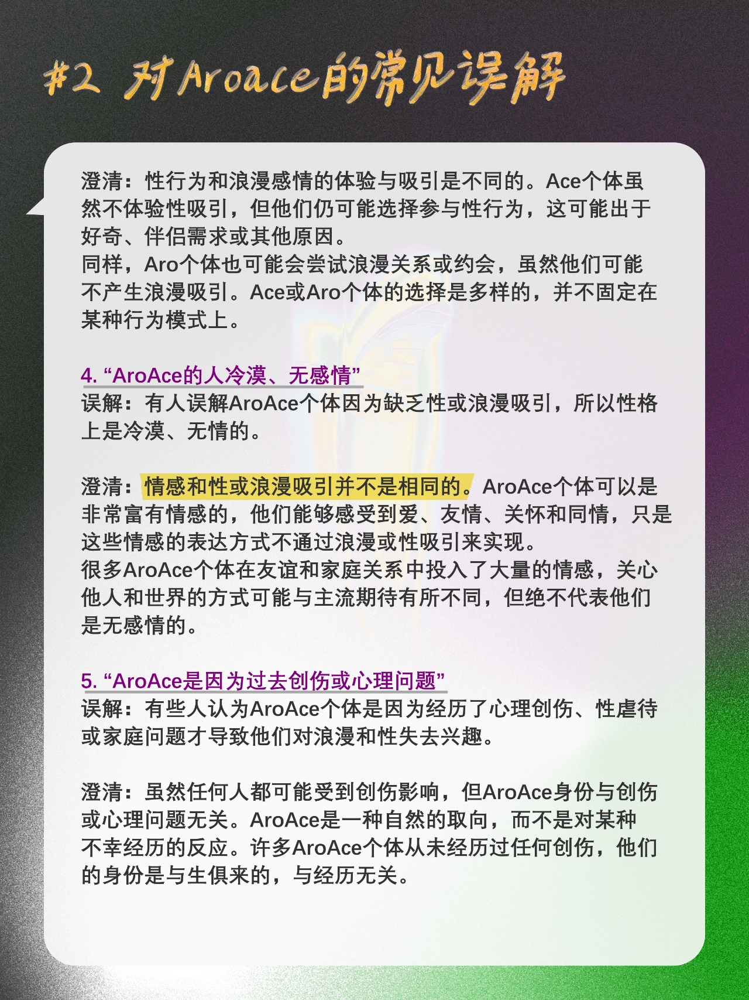 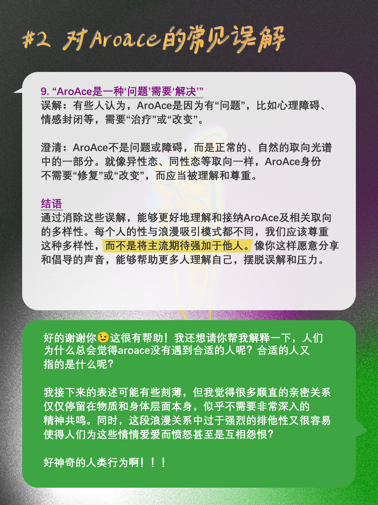
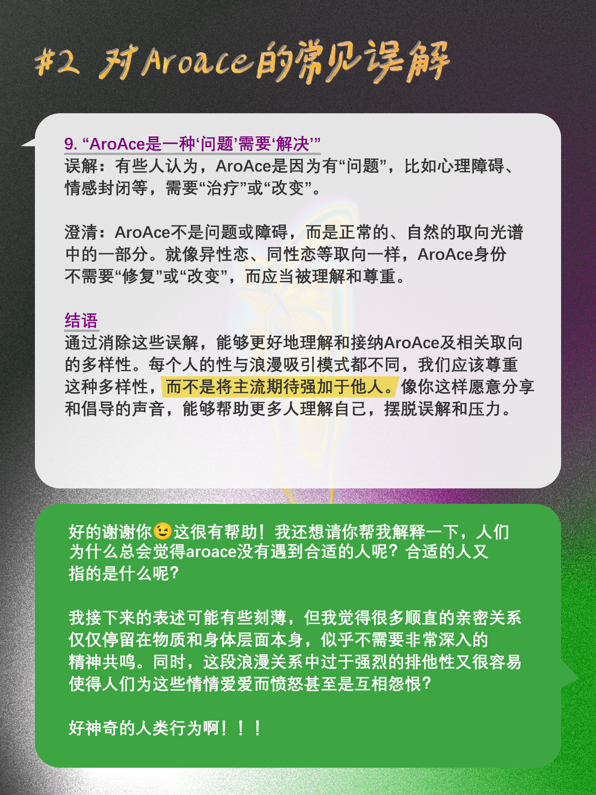 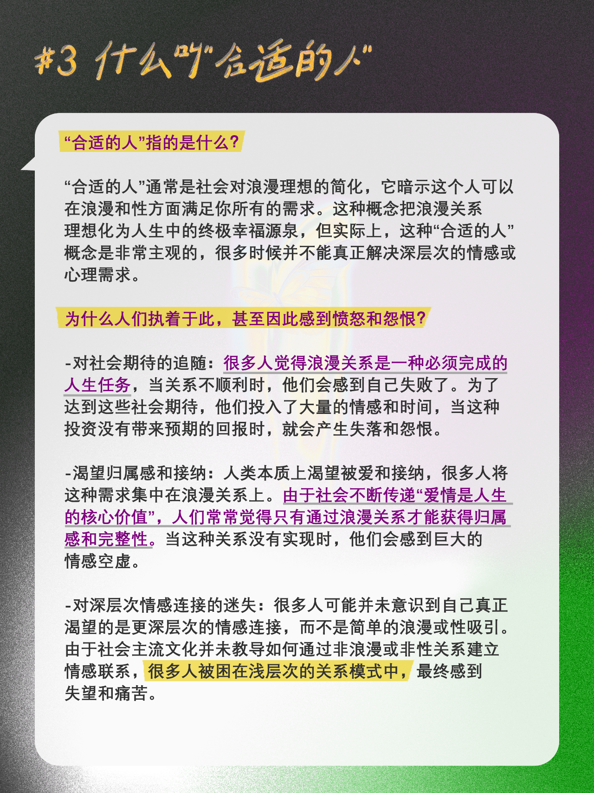
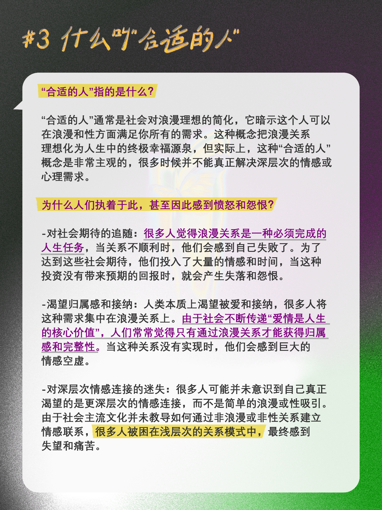


转载｜在Ace Week，我与ChatGPT聊聊“无浪漫倾向无性恋”
转载自公众号 @MonOasis，已获授权，也欢迎大家关注~
🖤🤍💜💚
-
本周（10/20-10/26）是Asexual Awareness Week，夹在开题报告和课程pre等众多ddl之间的玻珠还是用昨天和今天做了一些小小的科普！
希望可以让更多的人了解这个取向，也让更多的人开始选择自我探索:)
主要讨论的话题有：
1.关于Aroace的简要介绍
2.对Aroace的常见误解
3.什么叫“合适的人”
4.也许很多人都是Aroace？
5.我的一些想法
在这样一个浪漫关系无处不在的世界之中，似乎什么事情都能扯到“爱情”上面。人们渴望爱情、向往爱情，诗歌赞美爱情、音乐谱写爱情，文学与影视作品中留下了无数经历生离死别、值得被歌颂传唱的爱情故事。
所以呢？一切都需要为了爱情而让路吗？
不由得想起悲惨世界音乐剧中的那句经典台词：“Who cares about your lonely soul?”
我们似乎默认了爱情就是世界上最高的亲密关系，为了爱情我们可以拒绝朋友、拒绝家人，然后奋不顾身地投入到一段火花四溅的浪漫关系之中。
豆瓣上有一个小组叫“友谊的小船我一个人也能划”，有很多人记录下了自己的好友在谈了恋爱之后就查无此人的情况，于是默默为对方友谊降了级。
这是合理的吗？这是正常的吗？我们应当把爱情视为无法超越的吗？
如果你也为这些问题而困扰，那么欢迎来了解一下无浪漫倾向无性恋这个群体！爱情，不再是我们建立与世界连接的唯一途径，我们可以选择用自己的方式定义什么是爱。
或许，我们有可能找到超越“爱情”的亲密关系，一种更为广义的“人类之爱”：爱你自己、爱你身边的朋友与家人、爱远方的人们、爱存在于这个世界上的每一个生灵，而不仅仅把“爱”这个宏伟又美丽的概念，局限在你与你的男/女朋友之中。（P.S. 尊重每一种取向，也没有说传统方式不好的意思，遵循你的心意、选择你喜欢的就好！人好，大家都好！）最后我想说，我们之所以会对aroace的身份产生认同，是为了更好地探索和接纳自我，而并不是想用这些“标签”去限制、固化自己，所以请更加尽情地去体验情感和爱吧🥰
🖤🤍💜💚